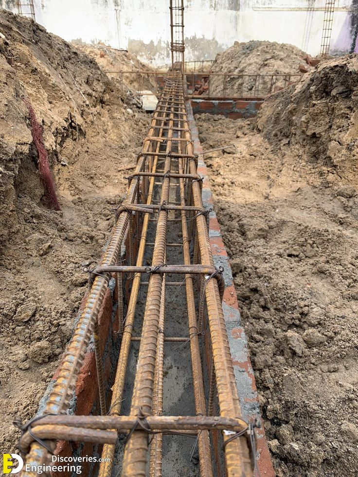

Plinth in Civil Engineering
The plinth is the part of a building located between the foundation and ground floor level. It raises the superstructure above ground level, providing both protection and structural support. Despite its simple appearance, the plinth plays a critical role in safeguarding the building against environmental hazards and contributing to its stability and appearance.
Definition of Plinth
A plinth is a horizontal base constructed with concrete or RCC, typically 300 mm to 600 mm in height, positioned above ground level. It supports the walls or columns and encircles the building's perimeter.
Functions of the Plinth
- Elevation from Ground: Prevents rainwater, moisture, and runoff from reaching the superstructure.
- Load Distribution: Transfers load from the walls to the foundation evenly.
- Termite & Pest Protection: Reduces the risk of infestation in structural and flooring materials.
- Stability: Ensures level base and stability for wall construction.
- Aesthetic Appeal: Visually separates the superstructure from the ground.
Plinth Components
- Plinth Beam: RCC beam that connects walls and resists settlement or seismic forces.
- Plinth Protection: Brick or concrete around the plinth that prevents water stagnation and soil erosion.
- Plinth Height: Usually 0.45 m to 0.6 m depending on environmental and aesthetic needs.
Construction Materials Used
- Bricks or stones in traditional structures
- Reinforced Cement Concrete (RCC) for modern buildings
- Cement mortar or concrete plaster for finishing and protection
Importance in Civil Engineering
- Ensures structural durability and support
- Prevents moisture-related degradation
- Keeps floor levels uniform
- Acts as a buffer against ground movements
- Improves visual and architectural appeal
Conclusion
The plinth, though often overlooked, is vital to the strength, function, and longevity of a structure. It bridges the gap between foundation and superstructure, making it a key consideration in civil engineering design and construction.